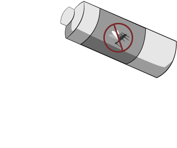

Scroll slowly to progress
CLICK TO BEGIN
Over half the world's population lives under the threat of Malaria
Each year, hundreds of thousands die from this deadly, yet preventable illness.
Scroll slowly to progress


Generally in the tropical and subtropic regions of the world, where mosquitoes can thrive.
Explore the map below to find out which places are affected.
Legend: Malaria Cases by Country 2012
Countries affected by Malaria
Legend: Malaria Cases by Country 2012
0 48,000,000Insecticide-treated mosquito nets (ITN) are simply a form of personal protection from mosquitoes, and is often the first line of defence against contracting Malaria. They are hung over beds at night, and offer a protective physical barrier for the user, as well as a chemical barrier that repels and kills mosquitoes. In recent years, ITNs have been drastically improved to maintain their insecticidal treatments for up to five years. These enhanced nets are known as Long-Lasting Insecticide-treated Nets (LLINs) and are the preferred ITN of choice.
When ITNs are used properly by at least 3/4 of the community: malaria transmission is reduced by 50%, child deaths are reduced by 20%, and the mosquito population could fall by 90%!
Indoor Residual Spraying (IRS) involves the spraying of mosquito-repellant insecticides inside homes and buildings to repel and/or kill mosquitoes when they enter and land on these surfaces. IRS is effective for around 3-6 months, depending on the insecticide used and the surface on which it is sprayed. In some cases, DDT, the most well-known and well-used form of IRS, can last for 9-12 months.
IRS has seen recent success in South Africa - where it has helped reduce malaria cases by 80%!
Antimalarial medicines, also known as 'antimalarials', are often taken by travellers (who have not built up any immunity) and those who are at particular risk (such as children and pregnant women). These are less popular than other conventional methods, due to the risk that overusing them may cause the malaria parasite to grow resistant to the drugs.
In addition to these preventative tools, it's also effective to try to hinder the growth of mosquito populations. For example, removing areas of standing water before mosquitoes have a chance to breed and lay eggs will help reduce their population sizes.
Legend: Malaria Cases by Country 2012
0 48,000,000